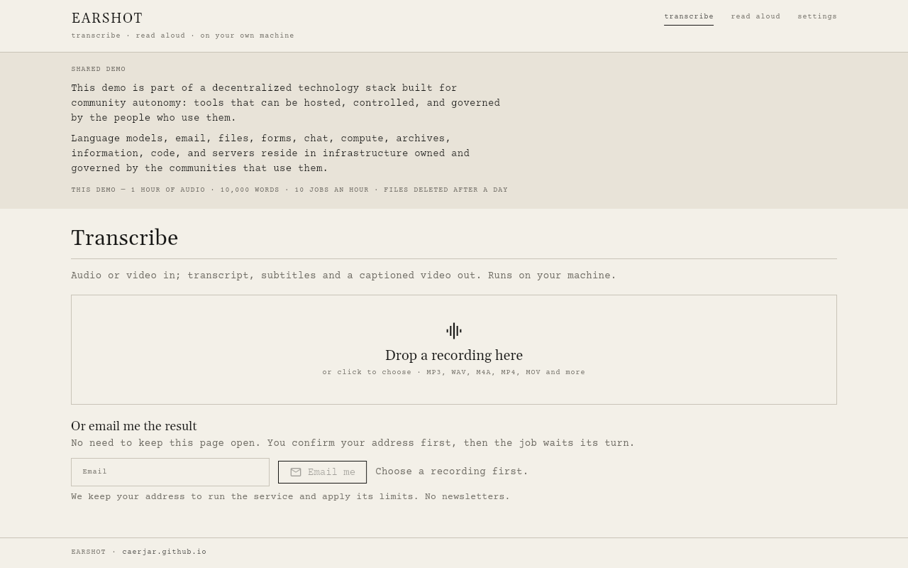

Earshot
A speech studio that runs on your own machine
Earshot does two things with speech. It transcribes recordings into text, subtitles and captioned video, and it reads PDFs, EPUBs and web articles aloud as MP3 files or chaptered audiobooks. Everything runs on your machine, with no accounts and no cloud services.

Transcribe
Drop in an audio or video file (MP3, WAV, M4A, FLAC, OGG, MP4, MOV, MKV and more, up to 1 GB); with video, only the sound is used. Save the result as any of TXT, DOCX, PDF, SRT, VTT or JSON with every word's start and end time. Label speakers marks each turn Speaker 1, Speaker 2 and so on; the number of speakers is worked out by listening, not asked for. Click any line of the transcript to hear it from that point.
A Skip silence switch is on by default and can be turned off for old tape or very quiet speakers, where faint speech might be mistaken for silence.
Captioned video
Choose a cover image, or leave it empty for an animated waveform, place the captions at the bottom, middle or top, and save a 1280×720 MP4. Captions are grouped into short lines of up to 42 characters, split at sentence ends or every 4 seconds.
Read aloud
Queue PDFs, EPUBs, text files and web addresses; each document is read, cleaned and shown with its number of sections and an estimated length at the chosen speed. Untick the sections you don't want, such as an index or appendix. Pick one of 38 English voices from two voice families, a speed from 0.7× to 1.6×, and either MP3 or an M4B audiobook with chapter markers. EPUB chapters follow the book's table of contents, and PDF chapters come from its top-level bookmarks.
What the cleaner leaves out
The document cleaner works by rules. It removes:
- numeric citations like
[3]or[4–7] - author–year citations like
(Smith et al., 2020)if you ask it to - reference and bibliography sections, when the heading appears in the second half of the text
- running headers, footers and page numbers in PDFs
- web addresses and IPA pronunciations
- tables, figures, maths and footnote markers in EPUBs
In PDFs, equations and tables are not detected and are read as whatever text the PDF contains; scanned PDFs without a text layer produce no text.
Install
Docker is the only requirement: one make command builds and starts everything, and the app is served from the same machine in the browser. The first run downloads about 276 MB of voice and transcription data; after that only reading web articles needs the internet.
Speed
Measured on an Apple M3 Max on 75 seconds of speech, the default voice reads at 7.0× real time and the default transcription runs at 1.1× real time. Each engine uses 4 threads, because raising that made things much slower: at 8 threads the same transcription ran about ten times slower.
Security
The server has no login and stays on loopback, and it assumes other websites open in your browser are hostile. Every POST needs a custom header, the Host header must be a loopback name, uploads are identified by their content and re-encoded before any decoder sees them, and fetching a web article refuses private addresses on every redirect.
- Year
- 2026
- Medium
- software / speech / sound
- Runs on
- macOS and the web, served from Docker on your own machine
- In
- audio, video, PDF, EPUB, web articles
- Out
- TXT, DOCX, PDF, SRT, VTT, JSON, captioned MP4, MP3, M4B
- Repository: private